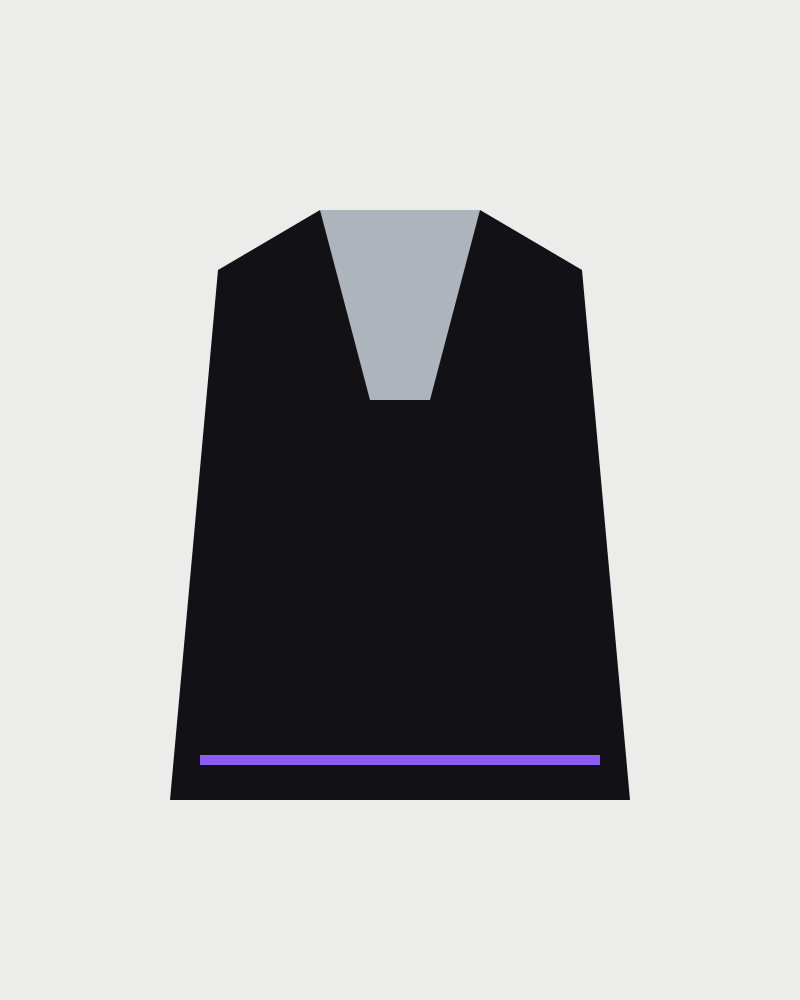
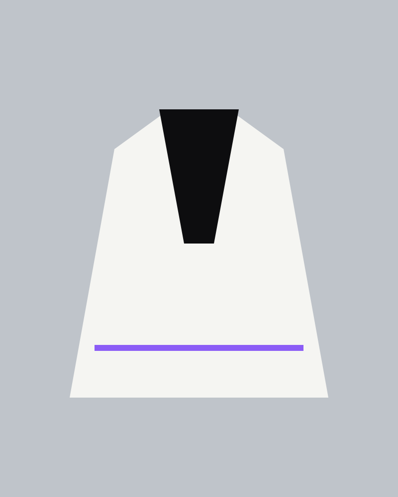

ORVYN
ORVYN

Shop / Vector Shell
Vector Shell
€390
Shell modular dengan bahu bergeser, jahitan berlapis, dan tab sinyal yang dapat dilepas. Dipotong mengikuti garis tubuh yang tegas.
Colour / optic black
Demo storefront. Checkout and payment are intentionally disabled.
Cut notes
Designed in a small run. The garment arrives folded in a reusable paper sleeve, with a repair card for long ownership.
Delivery
Dispatch in 2–4 working days. Complimentary exchanges within 14 days.